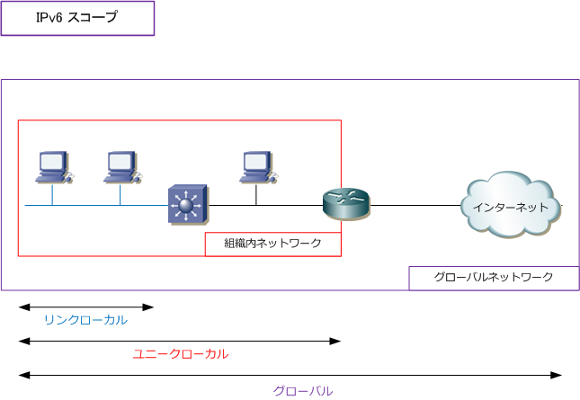
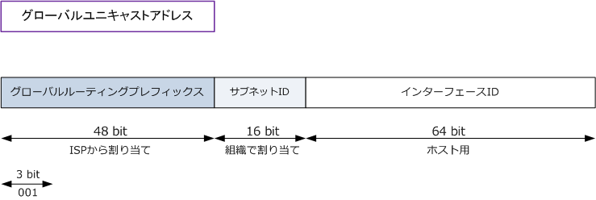
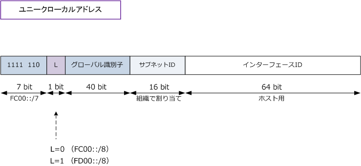
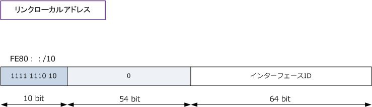
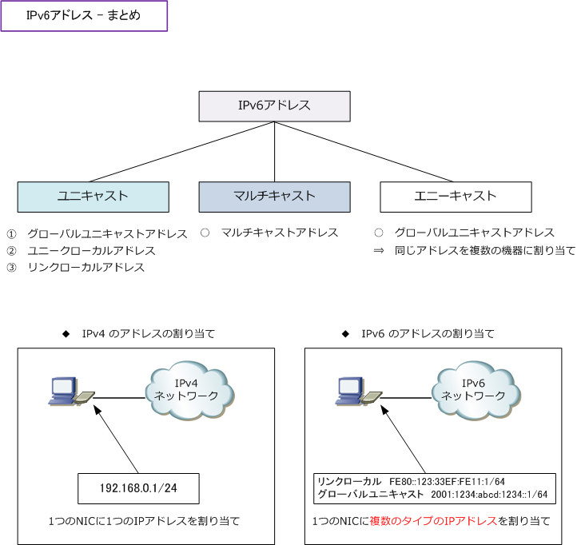
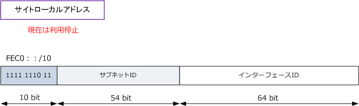

IPv6 - unicast address
IPv6アドレス - 3つのタイプ
IPv6アドレスはユニキャストアドレス、マルチキャストアドレス、エニーキャストアドレスの大きく3つ に分類されますが、今回はそのうちの「ユニキャストアドレス」にフォーカスを当てて解説していきます。
| IPv6アドレスのタイプ | 通信対象 | 説明 |
|---|---|---|
| ユニキャストアドレス | 1対1 | IPv4のユニキャストと同じように、1対1の通信で利用されるアドレス。 このアドレスを使用し、１つのインターフェースを特定することができる。 |
| マルチキャストアドレス | 1対グループ | IPv4のマルチキャストと同じく、1対グループの通信で利用されるアドレス。 マルチキャストは複数のインターフェースに割り当てることのできるアドレス。 IPv6ではブロードキャストアドレスが存在しないためマルチキャストアドレス の一部を同様の用途に割り振ることで、ブロードキャストと同等機能を実現。 |
| エニーキャストアドレス | 1対グループ内の1つ | IPv4にはないアドレス。マルチキャストと同じくグループ宛ての通信となるが グループに属する1つのインターフェースにパケットが到達すると、それ以上は 配送されない。つまりグループで最も近いデバイスとだけ通信するようになる。 エニーキャストは複数のインターフェースに割り当てることのできるアドレス。 |
IPv6 - 3つのスコープ
IPv6ではパケットの到達範囲（スコープ）がリンクローカル、ユニークローカル、グローバルの3つあります。
| スコープの種類 | スコープ | 説明 |
|---|---|---|
| リンクローカル | 同一セグメント | 同一セグメント上の端末と通信する場合に使用するアドレス。リンクローカル アドレス宛てのパケットはルーティングされない。つまりルータを超えられない。 |
| ユニークローカル | 組織内 ネットワーク |
IPv4のプライベートアドレスに相当する。異なるセグメント上の端末と通信 できるが組織内ネットワークでのみ有効なアドレス。 |
| グローバル | グローバル ネットワーク |
IPv4のグローバルアドレスに相当する。全てのIPv6ネットワークで一意となる。 ローカル、組織内、インターネット等スコープの制限はなくどこでも利用可能。 |

つまり、ユニキャストアドレスと一口にいっても、スコープにより以下の3種類のアドレスが存在します。
① グローバルユニキャストアドレス ② ユニークローカルアドレス（ユニークローカルユニキャストアドレス） ③ リンクローカルアドレス（リンクローカルユニキャストアドレス）
※ 組織内ネットワークで使用される「サイトローカルアドレス」は廃止されました。RFC3879。
IPv6 - 3種類のユニキャストアドレス
① グローバルユニキャストアドレス グローバルユニキャストアドレスは、IPv4のグローバルアドレスと同様にIANAが管理しているアドレスです。 現在IANAが解放しているグローバルユニキャストアドレスは、先頭3ビットが「001」から始まるアドレスで 「 2000：：/3 」と表記することができます。また、用途別に「/16」で以下の通り分類できます。
・ 「 2001：：/16 」 ⇒ IPv6インターネット用アドレス ・ 「 2002：：/16 」 ⇒ 6to4用アドレス ・ 「 2003：：/16 ～ 3FFD：：/16 」 ⇒ 現在、未割り当て
グローバルユニキャストアドレスはISPから割り当てられるグローバルルーティングプレフィックス、組織で サブネットを識別するために割り当てるサブネットID、ホストのインタフェースIDの3つのフィールドで構成。

② ユニークローカルアドレス ユニークローカルアドレスはIPv4でいえばプライベートIPアドレスです。アドレスブロックは「FC00::/7」の IPv6アドレスですが、正確には以下の2つの「/8」のグループに分類することができます。
・ FC00::/8 将来の定義用 ・ FD00::/8 アドレス中のグローバル識別子部分をランダムな値としていつでも誰でも利用可能なアドレス

③ リンクローカルアドレス リンクローカルアドレスは、同一セグメント上で使用するアドレスです。リンクローカルアドレスは、必ず 各インターフェースで必要なアドレスですが、IPv6が有効なインターフェースでは自動的に割り当てられます。 先頭の10ビットが「1111 1110 10」から始まります。これを16進数で表記すると「FE80：：/10」ですが、 続いてのフィールド 54bit が全て 0 なので、リンクローカルアドレスといえば「FE80：：/64」となります。

IPv6では、IPv4のサブネッティングのようにホスト部のビットを使用することなく、インターフェースIDは必ず64ビットあります。
IPv6 - まとめ

参考
IPv6アドレスの3種類のユニキャストアドレスとして、グローバル、ユニークローカル、リンクローカル アドレスを解説しましたが、以前に「サイトローカルアドレス」と呼ばれるユニキャストアドレスが定義 されていました。サイトローカルアドレスではRFC1918で定義されているIPv4のプライベートアドレスと 同じ問題を持つことが懸念されたことから、新しいローカルアドレスとしてユニークローカルアドレスが 定義されることになりました。
